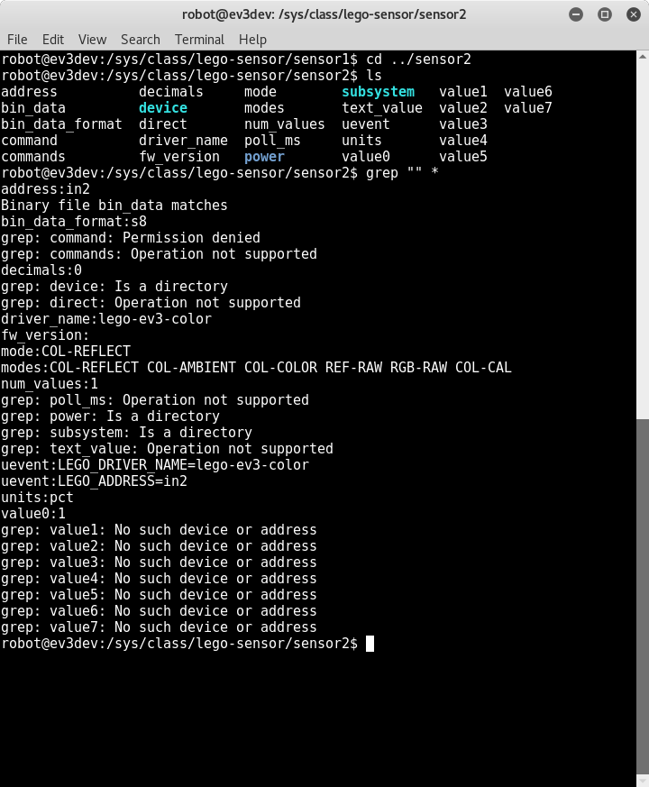

MINDSTORMS Compatible Sensors
| port | kernel | sensor |
|---|---|---|
| in1 | sensor0 | touch |
| in2 | sensor1 | gyro |
| in3 | sensor2 | color |
| in4 | sensor3 | ultuasound |
cd /sys/class/lego-sensor/
ls
let check sensor0
cd /sys/class/lego-sensor/sensor0
ls
grep "" *
arrocding to the
driver_name
, this sensor is
lego-ev3-touch
attach on
in4
, in
TOUCH
mode
as
value
:
0
which mean pull up.
let check sensor1
cd /sys/class/lego-sensor/sensor1
ls
grep "" *

arrocding to the
driver_name
, this sensor is
lego-ev3-gyro
attach on
in3
, in
GYRO-ANG
mode
as
value
:
-8
which mean negative 8 degree.
let check sensor2
cd /sys/class/lego-sensor/sensor2
ls
grep "" *

arrocidng to the
driver_name
, this sensor is
lego-ev3-color
attach on
in2
, in
COLOR-REFLECT
mode
as
value
:
1
and
unit
as
pict
let check sensor3
cd /sys/class/lego-sensor/sensor3
ls
grep "" *
arrocding to the
driver_name
, this sensor is
lego-ev3-us
which mean ultrasound sensor attach on
in1
, in
US-DIST-CM
mode
as
value
:
2550
which mean nothing in front of the sensor.
2550
is the maximum value…
change gyro sensor in different mode, change to gyro-cal
change mode to gyro-rate
change mode

http://docs.ev3dev.org/projects/lego-linux-drivers/en/ev3dev-jessie/sensors.html
http://docs.ev3dev.org/projects/lego-linux-drivers/en/ev3dev-jessie/sensors.html#sysfs
last modified : Saturday, 06. May 2017 06:22PM